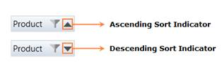

The sort indicator in the item represents the sort type such as ascending order or descending order. By default, the PivotGrid will populate the data in ascending order. The sorting order can be changed by clicking on the item present in the row header area and column header area.
The following image illustrates the sort indicator with sort types.

Figure 11: Sort Indicator
The following code example illustrates how to disable sorting in the Grouping Bar.
|
[C#] // Disabling Sorting. pivotGridControl1.AllowSorting = false; |
|
[VB] // Disabling Sorting. pivotGridControl1.AllowSorting = False
|